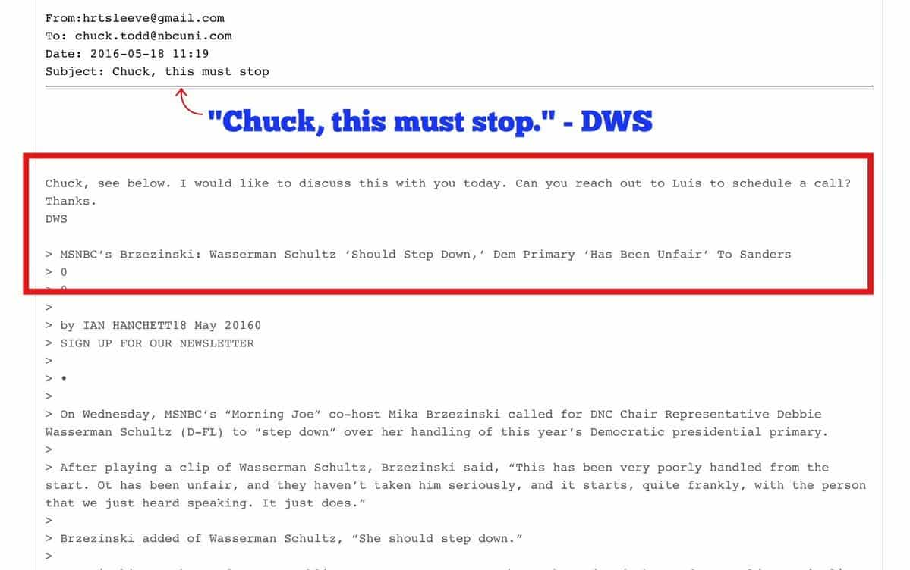
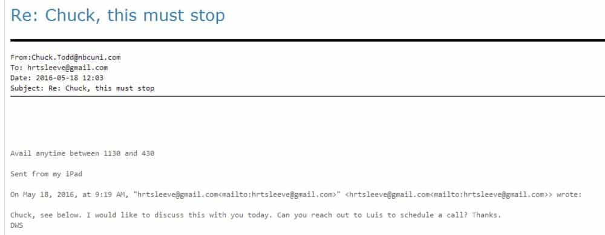

Daryush "Roosh" Valizadeh created ROK in October 2012. You can visit his blog at RooshV.com or follow him on Twitter and Facebook.


The recent leak of 10,000 internal emails from the Democratic National Committee reveal that popular NBC reporter Chuck Todd has ties with Democratic party members, particularly with former DNC chair Debbie Wasserman Schultz. The emails suggest that he has been amendable to altering his coverage to show the Democrats in a favorable light.
The most damning evidence that he may be a controlled asset of the Democratic Party is a leaked email from Schultz with the subject line “Chuck, this must stop.”

An unbiased reporter would respond with reluctance that his facts are being challenged, or resist taking orders from a party hack. Todd, on the other hand, responded slavishly to Schultz, giving a wide window of availability as if he was a cable guy.

While these emails don’t offer bulletproof evidence of collusion, it strongly suggests that Todd wanted to at least placate and satisfy the Democratic Party. Such a relationship goes against journalistic ethics, where a reporter is supposed to serve in the public interest instead of to connected insiders.
The public’s reaction to Todd’s behavior was explosive. Over 4,500 people retweeted my mention of the revelation and hundreds took the time to make negative comments directly to him.
https://twitter.com/rooshv/status/756617381632417792
He should have reported that they tried doing this 2 influence election!
— Sean B. Grenier (@SeanGrenier) July 22, 2016
@ChristiChat @chucktodd Chuck – you are an embarrassment to your profession. Sellout. Do they pay you to spin their stories?
— Laura Marklin (@LauraMarklin) July 23, 2016
Todd was compelled to respond to me (screenshot), a mere five months after his friends in the media launched a full scale attack against us. The tables can be easily turned against the media if there is enough pressure applied to their wrongdoings.
lots of misleading stuff on Twitter but this takes the cake. Total distortion. I receive coverage complaints daily from all over
— Chuck Todd (@chucktodd) July 22, 2016
Even more intriguing is that an NBC publicist emailed me to rationalize the obvious intimacy between Schultz and Todd.
Good morning Roosh –
Hope this note finds you well!
Between us, I wanted to follow up on Chuck Todd’s tweet to you: he received a complaint about coverage, a common occurrence. Every campaign we cover complains. We listen, and only if there is evidence of bad reporting or misreporting, do we act. But Chuck never acted on any of this nonsense. The complaints were groundless in his opinion. Common occurrence.
Shout with questions.
After I inquired to the publicist about the possible call that took place, she claimed that no call happened, and referred me to this media interview that Todd had with Schultz, insisting that it showed he “pressed” her on resigning from the DNC. But if you watch the video, which I took the pain to do, you’ll see that Todd set up softball questions that allowed Schultz to stay on message as if she was conducting a press conference. He also fails to mentions on air the previous demands he received from an angry Schultz.
An honest reporter would have recused himself from the interview or at least mention to his audience that he was contacted by Schultz because of his prior reporting. Todd did not do this, meaning that no one watching at home would ever suspect that he may be changing his coverage based on Schultz’ correspondence to him.
Another key piece of evidence that the emails hint to something improper is when Todd overcompensated in his most recent post-leak reporting about Schultz, calling her actions “stupid.” It’s as if he wanted to prove to the world that he is not biased and controlled by Schultz, going overboard in his insults to her.
While we may never know the extent of the collusion between Todd and the Democratic party, the emails do show that something improper is almost certainly taking place, and that the reporting we see from the big networks are clearly biased in favor of the establishment. It’s one thing to suspect that dirty tricks are occurring, but it’s another to have it so clearly confirmed.
 If you like this article and are concerned about the future of the Western world, check out Roosh's book Free Speech Isn't Free. It gives an inside look to how the globalist establishment is attempting to marginalize masculine men with a leftist agenda that promotes censorship, feminism, and sterility. It also shares key knowledge and tools that you can use to defend yourself against social justice attacks. Click here to learn more about the book. Your support will help maintain our operation.
If you like this article and are concerned about the future of the Western world, check out Roosh's book Free Speech Isn't Free. It gives an inside look to how the globalist establishment is attempting to marginalize masculine men with a leftist agenda that promotes censorship, feminism, and sterility. It also shares key knowledge and tools that you can use to defend yourself against social justice attacks. Click here to learn more about the book. Your support will help maintain our operation.
Don’t Miss: 3 Predictions We Can Make About A Hillary Clinton Presidency From Analyzing The DNC Leaks
{kind=link}